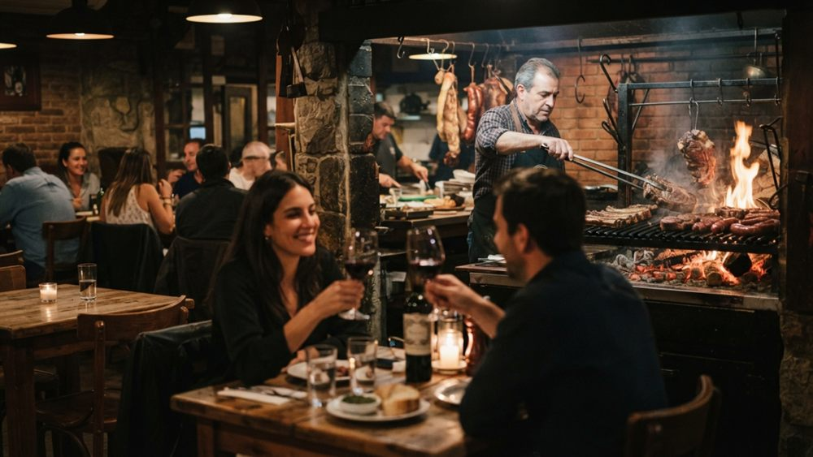
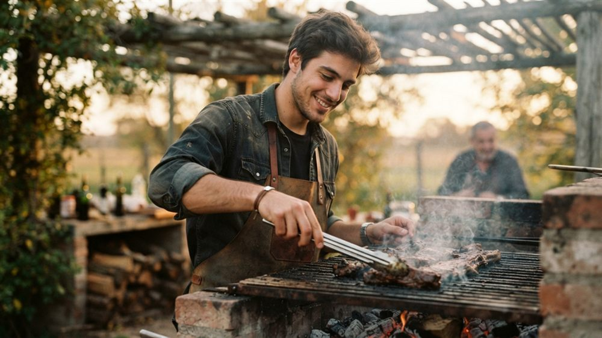

Corría el año 1962 cuando Don José Maldonado, hijo de inmigrantes y criado entre los fogones del campo, abrió una pequeña parrilla en una esquina de Palermo. Apenas seis mesas, una parrilla de hierro y una promesa: que nadie se levantara de esa mesa sin haber comido como en casa.
Lo que empezó como un changüí de barrio se ganó, plato a plato, el cariño de los vecinos. La receta nunca fue secreta: leña buena, carne noble y la paciencia de quien entiende que el asado no se apura.
Con los años, la parrilla creció junto a la familia. Los hijos de Don José aprendieron a leer el fuego mirándolo trabajar, y luego los nietos hicieron lo mismo. Hoy, la tercera generación mantiene viva cada costumbre: el mismo saludo en la puerta, el mismo respeto por el producto y la misma sobremesa larga.
Cambió el tamaño del salón, pero no el alma. Seguimos cortando la carne como nos enseñaron, seguimos encendiendo el fuego temprano y seguimos tratando a cada comensal como a un viejo amigo que vuelve a casa.

“El asado no es solo comida. Es juntar a la gente, tomarse el tiempo y compartir. Ese es todo el secreto.” Don José Maldonado, fundador

Al frente de la parrilla está José (nieto), el asador que heredó el oficio y el apodo del abuelo. Se levanta con el sol, elige personalmente los cortes y enciende la leña de quebracho mucho antes de que llegue el primer cliente.
Dicen que tiene un sexto sentido para el punto de la carne: sabe, con solo mirar las brasas, cuándo un bife está listo. No usa reloj ni termómetro. Usa la mano, el olfato y sesenta años de tradición metidos en la memoria.
Lo que no cambia, pase lo que pase
El buen asado se hace despacio. No apuramos el fuego ni la sobremesa.
Carne de calidad, leña de verdad y ingredientes frescos. Sin atajos.
Tratamos a cada persona como si viniera a comer a nuestra propia casa.
Respetamos el oficio y las recetas que nos dejaron los que vinieron antes.
Cada mesa que se llena escribe un capítulo más. Reservá tu lugar y sumate a la tradición.
Reservar mesa